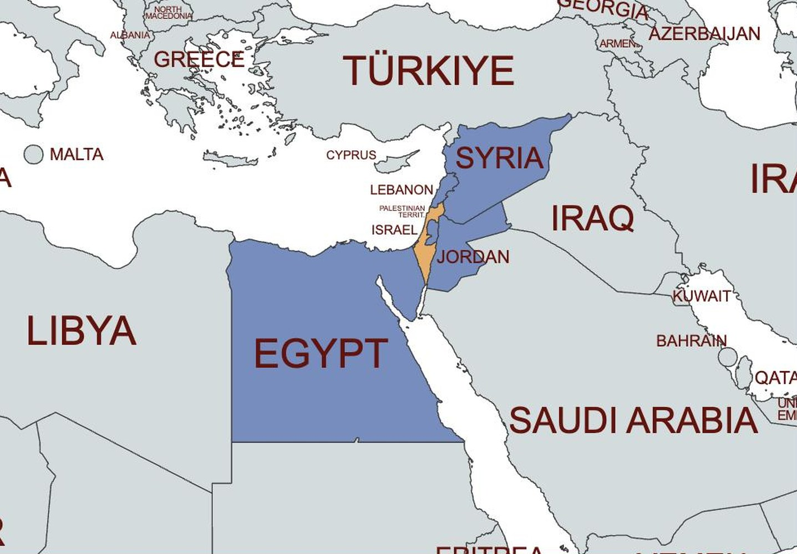
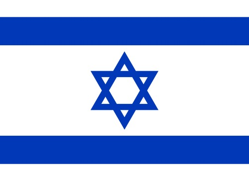
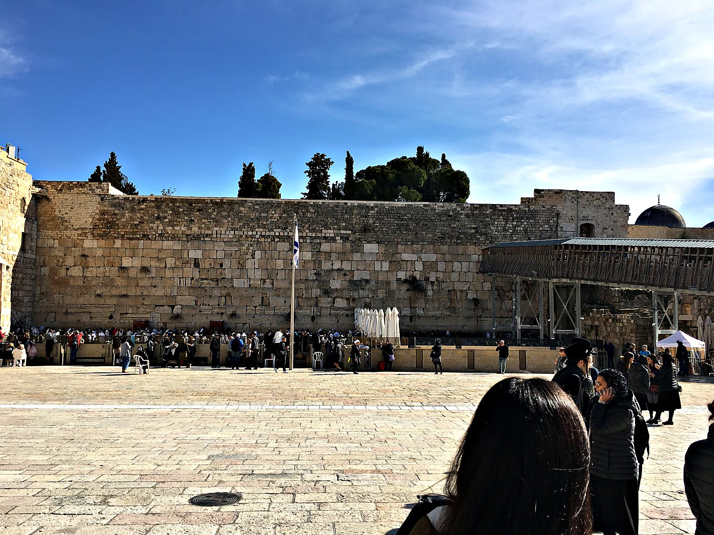
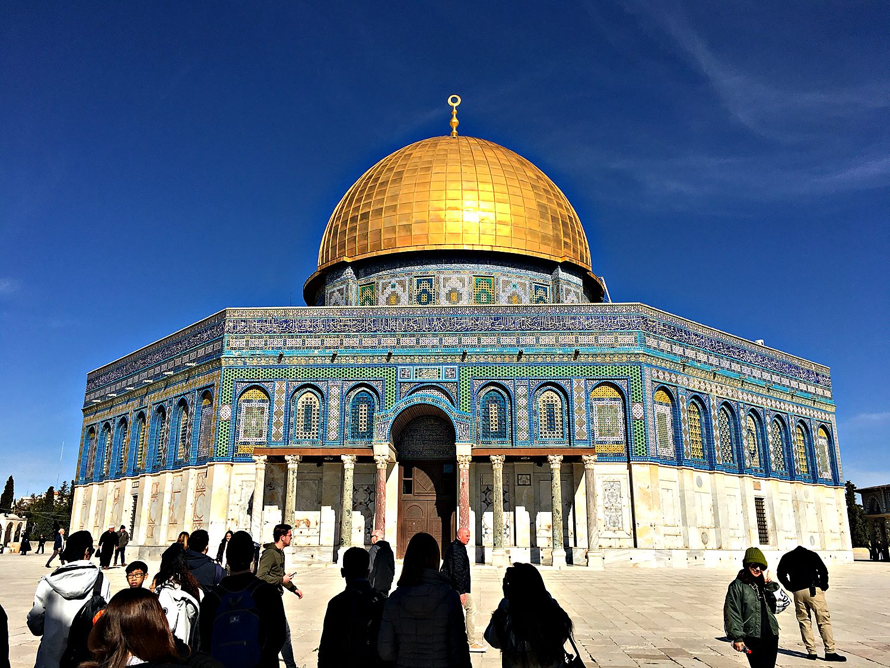
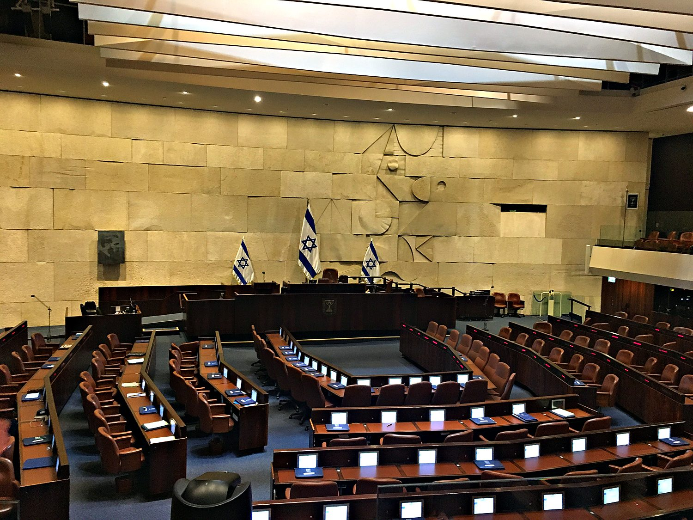

I visited Israel in January 2020 as part of a Princeton study trip led by the former US ambassador Daniel Kurtzer. Few weeks of my life have been so densely packed with history and argument. In a matter of days we stood a kilometre from Gaza, drove across the Golan Heights past old minefields, walked the Lebanese border, toured the Knesset, and moved through the Holy City on foot. We heard from Israeli generals, Palestinian officials, West Bank settlers, and peace activists, often within the same afternoon. One evening ended with a few of us wading into the frigid Sea of Galilee, where I lasted a heroic four seconds before deciding I had honoured the moment sufficiently.
Jerusalem is one of the oldest cities on earth, and one of the most contested. It is sacred to Judaism, Christianity, and Islam at the same time, and its walled Old City packs the holiest sites of all three into less than a square kilometre. For Jews it holds the Temple Mount and the Western Wall. For Christians it holds the path of the crucifixion and the Church of the Holy Sepulchre. For Muslims it holds the Dome of the Rock and Al-Aqsa Mosque. To walk its stone lanes is to hear church bells, the Muslim call to prayer, and Jewish prayer at the Wall, sometimes all at once. It is really sad that in this tense region coexistence remains challenging at best and deadly at worst.

The layers of history here run astonishingly deep. Jerusalem was the capital of the ancient Israelite kingdom and the site of the First and Second Temples, the second of which was destroyed by the Romans in 70 CE. That destruction scattered the Jewish people into a diaspora that lasted nearly two thousand years, though a Jewish presence in the land never entirely disappeared. Over the centuries the city was ruled in turn by Romans, Byzantines, Arab caliphates, Crusaders, Mamluks, and Ottomans, before falling under British control after the First World War. Each conqueror left a layer of stone, and much of the modern conflict is a dispute over who those stones belong to.

The modern State of Israel was founded in 1948 as a homeland for the Jewish people, in the shadow of the Holocaust and centuries of persecution in Europe. We saw that history rendered unforgettable at Yad Vashem, the national Holocaust memorial. The same 1948 war that created Israel is remembered by Palestinians as the Nakba, or catastrophe, when hundreds of thousands were displaced, and the two memories sit at the root of the conflict that continues today. In the 1967 Six-Day War Israel captured the West Bank, Gaza, the Golan Heights, and East Jerusalem, territory that remains disputed. I have genuine mixed feelings about Israel. I admire how Israel is a parliamentary democracy in an autocratic region that offers a refuge for LGBTQ people. I detest how many of the country’s security concerns are self-perpetuated, how Israel essentially has kept Gazans in an open-air prison for the past decade, and how Jewish settlers keep encroaching on Palestinian lands in the West Bank. I sympathize with a country that faces an existential threat from some its neighbors that have sworn to destroy it, and where air raid shelters are a routine location for socialization when Hezbollah or Hamas launch strikes.
The Western Wall, or Kotel, is the holiest place where Jews are permitted to pray. It is a surviving section of the massive retaining wall that once supported the platform of the Second Temple, and so it is the closest accessible remnant of the Temple that the Romans destroyed. Day and night its plaza fills with worshippers who press folded prayers into the cracks between the ancient stones. Standing among them, watching people rock in prayer against a wall two thousand years old, I understood why this modest stretch of masonry carries such enormous emotional weight for a people scattered across the world for so long.

Rising directly above the Western Wall is the Dome of the Rock, its golden cap the single most recognizable image of Jerusalem. Completed around 691 CE, it is one of the oldest works of Islamic architecture in the world, and it shelters the rock from which Muslims believe the Prophet Muhammad ascended on his Night Journey. It stands on the plateau that Muslims call the Haram al-Sharif and Jews call the Temple Mount, which makes this one patch of ground sacred to two faiths and one of the most sensitive places on the planet. The compound is administered by an Islamic trust, and the delicate arrangements governing who may visit and pray here are watched closely by the whole region.

For all the ancient stone, Israel is also a young modern state, and we spent time in the building where it governs itself. The Knesset is Israel's parliament, a single chamber of 120 members elected by proportional representation, which tends to produce coalitions as fractious as they are colorful. Sitting in the visitors' gallery, I found it a useful reminder that alongside the holy sites and the security briefings, this is a functioning and famously argumentative democracy. The debates I glimpsed were a fitting emblem of a country where almost nothing is settled quietly. I wish that Israel would do a better job of representing its Muslim population, which has limited political power and faces discrimination. At the same time, many Israeli Arabs have risen to prominent positions, and the Hadash–Ta'al offers Muslim Israelis a voice in the Knesset, albeit a limited one.
